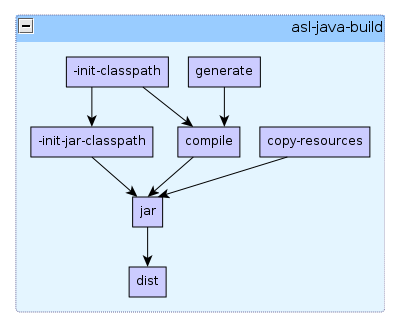

Ant Script Library: asl-java-build.xml
Overview
asl-java-build.xml contains properties and targets that are
used for building Java projects.
Properties
All properties defined with this module are prefixed with
"java-build.".
| Name | Default Value | Description |
|---|---|---|
java-build.src-dir |
src/main/java |
The root of the directory tree containing the system source code |
java-build.lib-dir |
lib |
The directory containing all the library jar files. Any jar
file contained within this directory (or any subdirectories) will
be added the the javac classpath. (see target
-init-classpath). |
java-build.classes-dir |
${common.target-dir}/classes |
The root of the directory tree containing compiled system classes and resources. |
java-build.dist-ext |
.jar |
The file extension of the the distributable artifact. |
java-build.dist-filename |
${ant.project.name}${java-build.dist-ext} |
The file name of the distributable artifact. |
java-build.dist-file |
${common.dist-dir}/${java-build.dist-filename} |
The fully qualified path to the distributable artifact. |
java-build.source-ver |
1.5 |
Specifies the level of source code compatability |
java-build.target-ver |
1.5 |
Specifies the target JVM version for which the compiler should generate classes |
java-build.debug |
on |
Generate debugging info |
Targets

dist
Creates the distributable artifact for this build. By default, this is an
empty target that just has a dependency upon the jar
target. Other types of projects (such as war or ear) will need to override
this target and provide a different target dependency.
jar
Creates a jar file. This target has dependencies upon the targets
compile,
copy-resources,
-init-time and
-init-jar-classpath.
The name and location of the generated jar is controlled by the
property java-build.dist-file (which is
target/dist/${ant.project.name}.jar by default).
The generated jar will contain everything contained the directory
specified by the property java-build.classes-dir (which is
target/classes by default). The
compile and
copy-resources targets both put
all their class files and other resources in that directory, so these will
be available in the packaged jar.
The generated jar will have a number of manifest attributes set, including
the attributes Main-Class and Class-Path, meaning
that the jar can be used as an application jar, by invoking java as follows:
java -jar my.jarThe manifest attributes take their values from the following properties:
| Property Name | Default Value | Description |
|---|---|---|
java-build.jar-title |
${ant.project.name} |
Sets the Implementation-Title attribute. This value
can be accessed in code by the method
java.lang.Package.getImplementationTitle(). |
java-build.jar-version |
dev-${DSTAMP}${TSTAMP} |
Sets the Implementation-Version attribute. This value can be accessed in code by the method
java.lang.Package.getImplementationVersion(). |
java-build.jar-vendor |
|
Sets the Implementation-Vendor attribute. This
value can be accessed in code by the method
java.lang.Package.getImplementationVendor(). |
java-build.jar-build-id |
Built by ${user.name} at ${common.timestamp} running on ${os.name} ${os.version} ${os.arch} |
Sets the Build-Id attribute. |
java-build.jar-main-class |
|
Sets the Main-Class attribute. By setting the value
of this attribute to the name of a class contained within the jar,
that class can be invoked by using the
'java -jar [jarname]' syntax. |
java-build.jar-classpath |
|
Sets the Class-Path attribute. This property is
initialised by the target
-init-jar-classpath |
copy-resources
Copies all files that don't have a .java extension from
${java-build.src-dir} to ${java-build.classes-dir}.
This ensures that all resources required by the Java classes will be available
when packaged within the jar file.
In projects where resources are kept in separate directories to the source code, this target will need to be overridden. For example:
<target name="copy-resources"
depends="asl-java-build.copy-resources"
description="Copies resources">
<copy todir="${java-build.classes-dir}">
<fileset dir="myresources"/>
</copy>
</target>
Note that in this example, the overriding target still has a dependency
on the original overridden target. This means that both targets are processed,
and resources in both the source directory and the extra myresources
directory will be copied in preparation for the jar
target.
compile
Calls javac on the source code in
${java-build.src-dir}, with the generated classes being put into
the directory ${java-build.classes-dir}. The classpath used in
compilation is defined by the path with id="java-build.classpath"
(which is defined by the target -init-classpath
by default).
-init-classpath
Defines a path
with id="java-build.classpath". This path is used by the
javac task in the compile
target. By default, this path will contain all files with extension
.jar in the ${java-build.lib-dir} directory
(including sub-directories).
This target must be overridden to provide an alternative classpath if you are using an artifact repository.
-init-jar-classpath
Defines a property called 'java-build.jar-classpath', which
is used as the 'Class-Path' attribute of the manifest defined
in the jar target.
The jar classpath is different to the compilation classpath, in that the
jar classpath expects that all the depandent jars are expected to be in a
sub-directory called lib, which is relative to the location of
the project jar. This property and the Main-Class mean that
it is possible to use the generated jar as an application jar, if required.
generate
This target does nothing. It can be overridden in projects that need to generate some source code before the compilation step. (For example, compiling an XML schema definition to java source code for JAXB.)
Is there a problem or mistake on this page? Do you want to contribute some changes? Send me an email at joe@exubero.com.